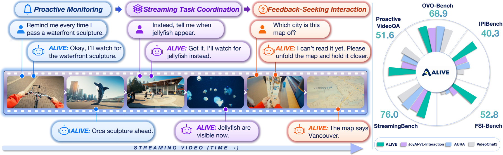
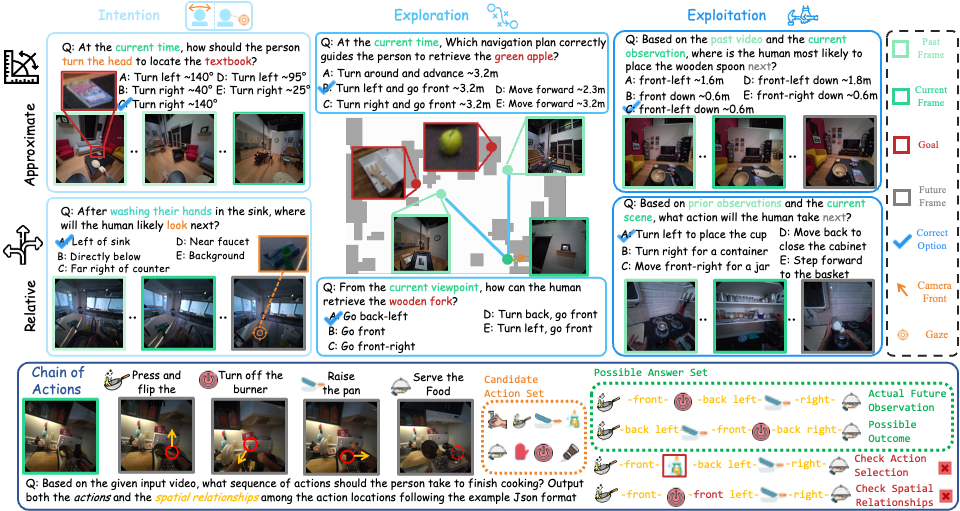
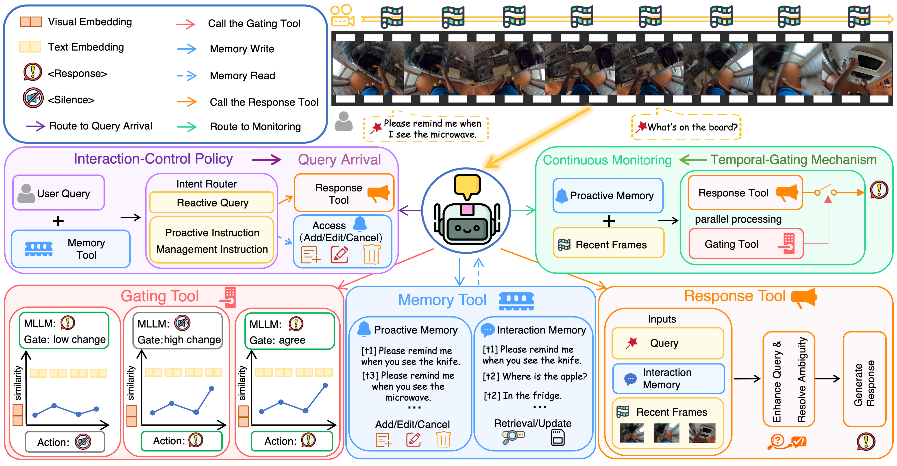
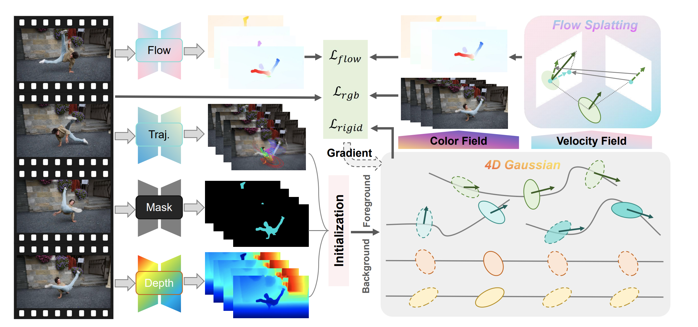
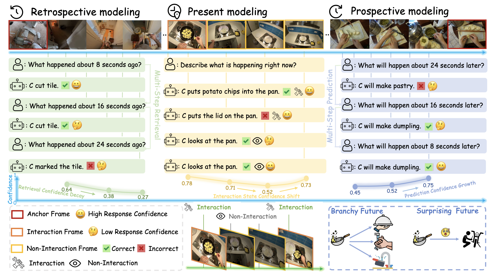
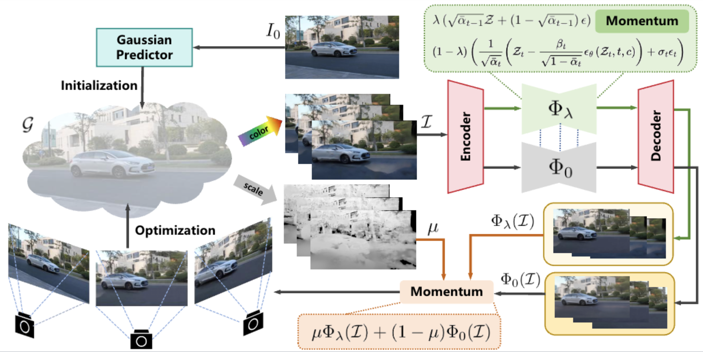
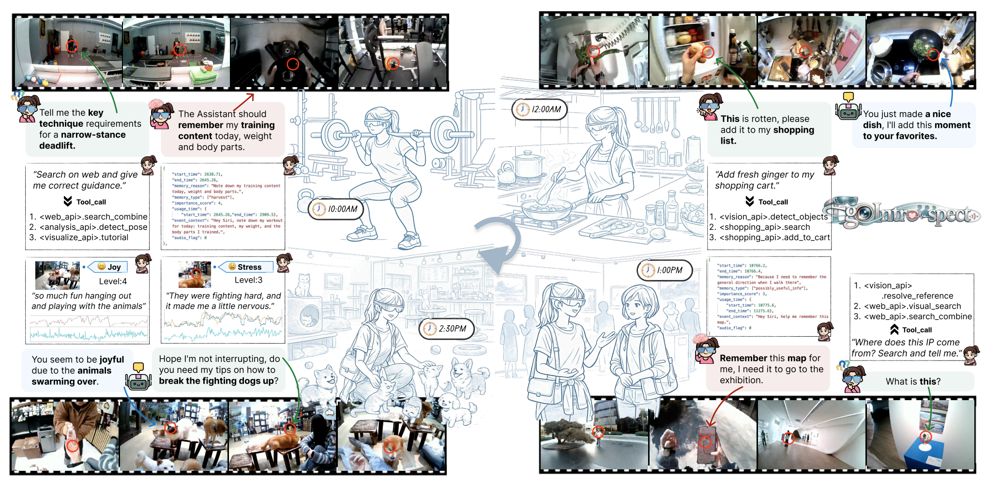

|
Jinzhao Li
I am a Ph.D. student at the College of AI, Tsinghua University, advised by
Prof. Miao Liu.
Previously, I completed my undergraduate studies at Xingjian College, Tsinghua University.
My research focuses on understanding and interaction in multimodal large language models.
Feel free to contact me if you are interested in our work or would like to collaborate:
lijinzha22@mails.tsinghua.edu.cn.
Scholar /
Github
|
|
|
|
Tsinghua University, College of AI
Ph.D. Student
Sep 2026 – Jun 2031 (expected)
|
|
|
Tsinghua University, Xingjian College
Undergraduate
Aug 2022 – Jun 2026
Ranked 1st in Major
|
Publications / Preprints
* Equal contribution † Project lead
|
|

|
ALIVE: Making Streaming Video Models Interactive
Jinzhao Li*, Yuan Xu*, Jinxuan Wu, Yukun Wang, Yijia Lei, Hanyu Ji, Yinuo Chen, Zining Huang, Chi Zhang, Hang Ye, Yiwu Zhong, Honglei Yan, Panwang Pan, Yizhou Wang, Yin Li, Miao Liu
arXiv, 2026
🤗 Hugging Face Daily Papers · #2 Paper of the day
project page /
arXiv /
code
An interactive streaming video model that combines contrastive supervised fine-tuning and behavior-aligned reinforcement learning for proactive monitoring, task coordination, and feedback seeking.
|
|

|
EgoProx: Evaluating MLLMs on Egocentric 3D Proximity Reasoning Across a Cognitive Hierarchy
Jinzhao Li,
Yinuo Chen,
Dongxu Piao,
Panwang Pan,
Yifan Yu,
Dong Wang,
Honglei Yan,
Liang Yue,
Shaofei Wang,
Yixin Chen,
Siyuan Huang,
Miao Liu
CVPR, 2026
project page /
arXiv /
code
A benchmark for egocentric human–object 3D proximity reasoning across intention, exploration, exploitation, and action-chain levels.
|
|

|
IPIBench: Evaluating Interactive Proactive Intelligence of MLLMs under Continuous Streams
Jinzhao Li,
Yinuo Chen,
Wenxuan Song,
Yijia Lei,
Yichi Zhang,
Honglei Yan,
Panwang Pan,
Miao Liu
NeurIPS, 2026
project page /
arXiv /
code
A benchmark and agent framework for interactive proactive intelligence in video streams, improving proactive responses and multi-turn coordination through interaction control and temporal gating.
|
|

|
Learning Motion-Expressive 4D Gaussian Representations from Monocular Videos with Flow Splatting
Jinzhao Li, Miao Liu
arXiv, 2026
arXiv
A motion-expressive 4D Gaussian representation that uses rendered optical flow to jointly learn scene appearance and dynamics from monocular videos.
|
|

|
EgoSAT: A Comprehensive Benchmark of Egocentric Streaming Interaction Understanding
Yijia Lei,
Jinzhao Li†,
Yichi Zhang,
Jiacheng Hua,
Yin Li,
Miao Liu
ECCV, 2026
project page /
arXiv /
code
A benchmark that unifies retrospective reasoning, online understanding, and future anticipation in egocentric video streams using only previously observed frames.
|
|

|
Scene Splatter: Momentum 3D Scene Generation from Single Image with Video Diffusion Model
Shengjun Zhang,
Jinzhao Li,
Xin Fei,
Hao Liu,
Yueqi Duan
CVPR, 2025
project page /
arXiv /
code
A single-image 3D scene generation method that combines video diffusion priors with scene momentum to balance novel-view quality and 3D consistency.
|
|

|
EgoIntrospect: An Egocentric Dataset and Benchmark for User-Centric Internal State Reasoning
Zeyu Wang,
Chang Liu,
Eduardus Tjitrahardja,
Yuntao Wang,
Borislav Pavlov,
Fangfei Gou,
...,
Qi Wang,
Jinzhao Li,
Jiacheng Hua,
...,
Yin Li,
Qianying Wang,
Yuanchun Shi,
Miao Liu
arXiv, 2026
project page /
arXiv /
code
An egocentric multimodal dataset and benchmark for reasoning about user internal states, covering affective experience, interactive intent, and cognitive memory.
|
Honors & Awards
- Oct 2026Friends of Tsinghua – College of AI, GF Securities Zhishi Tuqiang Scholarship (Top 10)
- Oct 2026Friends of Tsinghua – College of AI, Bosch Scholarship
- Sep 2026Friends of Tsinghua – College of AI, Huanlan Dream Scholarship
- Jun 2026Outstanding Graduate, Tsinghua University (Top 2%)
- Dec 2025National Scholarship (Top 2%)
- Dec 2025Science and Technology Innovation Excellence Scholarship, Tsinghua University
- Dec 2024Comprehensive Excellence Scholarship, Tsinghua University
- Dec 2024Academic Excellence Scholarship, Tsinghua University
- Dec 2024Fujian Young Talent Development Program Scholarship
- May 20242nd Place, 18th Tsinghua University Intelligent Vehicle Competition (Team Captain)
- Jan 2024Gold Award, Xingjian College Winter Social Practice Team (Team Captain)
- Dec 2023Comprehensive Excellence Scholarship, Tsinghua University
- Dec 2023Sports Excellence Scholarship, Tsinghua University
|
|